| Декартовы координаты на плоскости. Простейшей системой координат на плоскости является известная система декартовых координат. Ее характеристики:
Две перпендикулярные прямые, проведенные на плоскости, образуют оси координат, а точка пересечения этих прямых является началом координат.
Начало координат делит каждую ось на положительную и отрицательную полуоси.
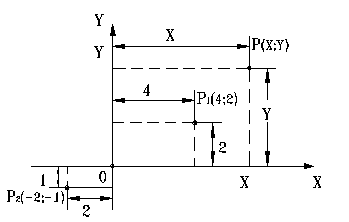
Чтобы найти координаты точки Р на плоскости, необходимо провести через эту точ-ку прямые линии, параллельные полуосям ОХ и ОУ; точки пересечения этих прямых с полуосями обозначаются Х и Y. Координаты точки Р – (Х,Y) длины отрезков ОХ и ОY.
Оси координат делят плоскости на четыре квадрата.
Система декартовых координат используется для описания соотношений между точ-ками, прямыми и кривыми линиями.
Уравнение прямой линии
Явное уравнение прямой линии имеет вид Y=mX+с,
где m - тангенс угла наклона; c - точка пересечения с осью Y.
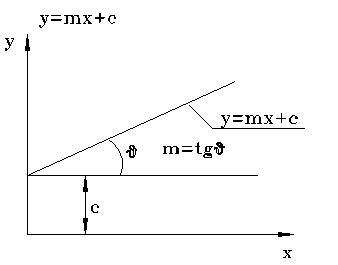
Это явное уравнение для Y позволяет вычислить Y при любом значении Х. Однако у этого уравнения есть один недостаток: с его помощью нельзя описать вертикальные прямые, например X=1.
Если прямая проходит через две заданные точки (Х1;Y1) и (Х2;Y2), то явное уравне-ние можно переписать:
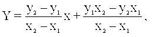
или записать (X2 - X1)(Y - Y1)=(Y2 - Y1)(X - X1). Здесь уравнение прямой имеет неявный вид. Это неявная форма задания прямой дает возможность описывать вертикальные пря-мые: если X2=X1, а Y2=/Y1, то мы получаем уравнение вертикальной прямой X=X1.
В общем виде уравнение прямой записывается: aX+bY+c=0.
aX+bY+c=0 - уравнение вертикальной прямой, если b=0.
Уравнения плоских кривых
Уравнение явного вида Y=f(X), где f(X) - заданная функция от X, является удовле-творительным в том случае, когда функция однозначна, а кривая не имеет вертикальных касательных.
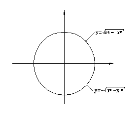
Неявное уравнение X*X+Y*Y-r*r=0 применяется для окружности. Неявное уравнение в общем случае записывается в виде f(X,Y)=0, где f(X,Y) - функция от X и Y.
Наиболее распространенными неявными уравнениями являются уравнения кониче-ских сечений.
Уравнение для эллипса
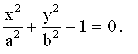
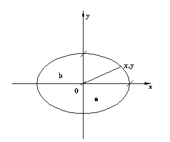
Уравнение для параболы Y*Y-4aX=0.
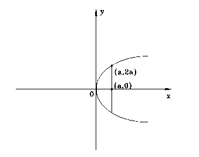
Уравнение для гиперболы
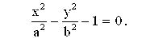
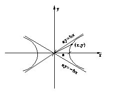
В общий случае, все типы конических сечений описываются уравнением второй сте-пени: S=aX*X+2hXY+bY*Y+2gX+2fY+c=0,
где a,b,c,f,g,h – различные между собой коэффициенты.
Если выполняется соотношение h*h<2, то кривая принимает вид эллипса; если h*h=ab, то вид параболы; если h*h>ab, то гиперболы, при условии, что abc+2fgh-2fgh-af*f-bg*g-ch=/0
Формулы взаимодействия между точками и прямыми
Расстояние между двумя точками (X1,Y1), (X2,Y2)
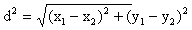
Расстояние между точкой (X, Y) и прямой aX+bY+c=0
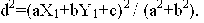
Две прямые a1X+b1Y+c1 и a2X+b2Y+c2 пересекаются в точке (X, Y)
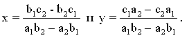
Угол образованный двумя прямыми.
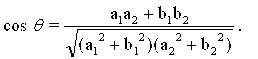
Если a1b2=a2b1 , то две прямые параллельны. Если a1a2+b1b2=0, то две прямые пер-пендикулярны.
Касательные и нормали к кривым
Касательная к кривой Y=f(X) в точке Р(X,Y) определяется уравнением Y=Y1+f’(X1)(X-X1),
где f’(X1) - значение производной df / dX в точке X=X1.
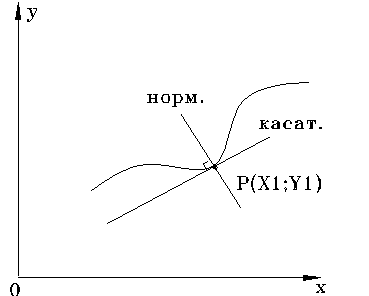
Если рассматриваемая кривая имеет в точке Р вертикальную или почти вертикаль-ную касательную, определение касательной в данной точке при помощи этой формулы невозможно или затруднительно. Затруднения данного рода легко преодолеваются, если для описания кривой используется неявное уравнение g(X,Y)=0. Тогда неявное уравнение касательной будет иметь вид
gx(X1,Y1)(X-X1)+gy(X1,Y1)(Y-Y1)=0,
где gx и gy - значения производных dg/dX и dg/dY.
Пример :
Касательная к окружности X2+Y2-1=0 в точке определяется по формулам g(X,Y)= X2+Y2-1 ->gx=2X, gy=2Y ->gx(1,0)=2,gy(1,0)=0. Уравнение касательной имеет вид 2(X-1)+0(Y-0)=0, касательная является верти-кальной линией X=1.
Отметим, что если окружность или касательная записана в явном виде, результат получить невозмож-но.
Для нормали, восстановленной в точке Р, явным уравнением является Y=Y1-(X-1)/f’(X1) . Это уравнение непригодно для случая когда нормаль горизонтальна в точке Р.
Соответствующее уравнение неявного вида записывается как:
gy(X-X1)-gx(Y-Y1)=0.
Это уравнение обеспечивает определение нормали в тех случаях, когда применение явно-го уравнения невозможно или затруднительно.
Параметрические уравнения прямых и кривых
В случае, когда много вертикальных касательных использование вышеперечисленных уравнений затруднительно и они непригодны для генерирования кривых.
Существует еще один способ описания, при котором равноправные координаты X и Y - уравнения параметрического вида; X и Y функции от некоторого параметра t, X=X(t), Y=Y(t).
Пример:
Окружность X2+Y2=1 в параметрическом виде записывается X=cos(t) , Y=sin(t), 0 <=t<=2п При условии 2п/3<=t<=7п/6 дает полное описание дуги ABC окружности.
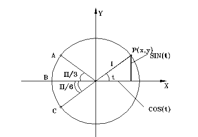
Если X(t) и Y(t) - линейные функции от t, то рассматриваемая кривая будет прямой.
В частности прямая проходящая через Р1 и Р2 определяется по формулам,
X=X1+t(X2-X1),
Y=Y1+t(Y2-Y1).
Точка P(X,Y) , как показано на рисунке делит прямую, соединяющую точки Р1 и Р2, на отрезки в отношении t:(1-t). Для доказательства используется подобие треугольников.
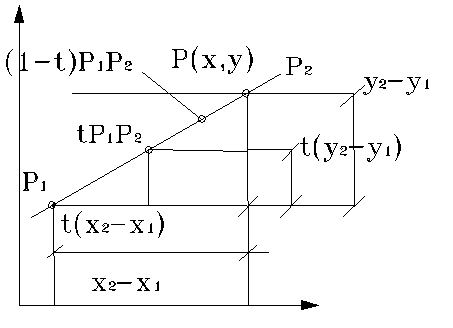
Прямая aX+bY+c=0 описывается параметрическим уравнением :
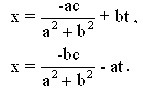
Касательная к кривой X=X(t), Y=Y(t) в точке Р с параметром t=t1 определяется уравнением X=X(k)=X(t1)+kX(t1), Y=Y(k)=Y(t1)+kY(t1) , где k- параметр на касательной, а X(t1) и Y(t1) значение производных dX/dt и dY/dt в точке t=t1.
Нормаль в данной точке кривой определяется по формулам X=X(t1)+kX(t1), Y=Y(t1)-kY(t1).
Кривизна
Радиус кривизны R кривой Y=Y(X) определяется известной формулой
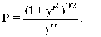
Так как R бесконечен в точках перегиба кривой, удобнее пользоваться самой кривизной H=1/R, поскольку это величина конечная, если нет заострений на кривой:
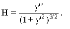
Соответствующая формула в параметрическом виде кривой X=X(t), Y=Y(t).
В неявном виде f(X;Y)=0
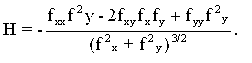
Вывод последних двух формул рекомендуется выполнить самостоятельно.
|